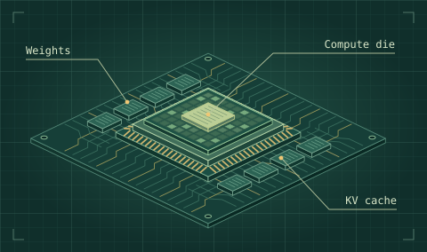

Model executor
Owns weights, kernels, device placement, collectives, and the forward pass. It should accept explicit batch metadata rather than silently owning request policy.
Engineering field guide
How does a prompt become a stream of tokens? Follow one request from the first forward pass to the engines that serve it across GPUs.

Token laboratory
Inference uses fixed model weights to predict what comes next. A tokenizer turns the prompt into IDs. The model scores each possible next ID, selects one, then uses it as input for the following step.
The byte tokenizer maps “Hi” to 72 and 105. Prefill processes both positions. The last position scores all 256 possible next bytes and ID 104 wins.
Highest logits 104 (2.7758) · 173 (2.6726) · 74 (2.0050)
Generated IDs [104]
The replay uses recorded outputs from the repository’s one-layer, untrained model. Its 256 vocabulary entries are byte values, so generated IDs can include control bytes. From the repository root, install the package and run the selected prompt.
python -m pip install -e .
mini-infer sample "Hi" --seed 7 --temperature 0 --max-new-tokens 3Serving architecture
A server keeps many token loops in flight. Trace the successful path below. Each time a request needs another token, it returns to the scheduler alongside other active requests.
A long prompt can return to the scheduler several times before it produces its first token. After that first token, follow the decode branch for each subsequent forward pass.
01 · Architecture
Model math creates logits. The engine decides whose math runs, where state lives, and when bytes cross process or network boundaries.
Owns weights, kernels, device placement, collectives, and the forward pass. It should accept explicit batch metadata rather than silently owning request policy.
Converts queued requests into token work. It balances throughput, time to first token, inter-token latency, fairness, and available KV blocks.
Maps logical sequence positions to physical KV storage, tracks ownership and reference counts, and makes allocation failure an explicit scheduling signal.
Applies penalties, temperature, top-k/top-p or constrained masks, samples the next token, and detects stop conditions deterministically.
This checkout includes a tiny stdlib HTTP handler, request schema, chat renderer, health route, model list, completion response, and server-sent-event stream.
The teaching engine timestamps submission, start, generated tokens and completion. Compare queue delay with time to first token and the gaps between successive tokens.
The five-step flow above is usually spread across separate operating-system processes. The reason is practical: input processing and incremental text output have different resource demands from the loop that schedules GPU work. Splitting the work lets each stage run in parallel and talk through cheap message passing.
In vLLM’s V1 design, a tensor-parallel degree of four gives six processes: one API server, one engine core, and four GPU workers. Engine deep dives: compare engines, vLLM internals, and SGLang internals. Source diagrams are collected in the reference gallery.
02 · Token loop
Treating them as one generic forward pass hides the most important latency, arithmetic-intensity, and scheduling differences.
| Property | Prefill | Decode |
|---|---|---|
| Input per sequence | Many prompt tokens | Usually one new token |
| Primary output | KV entries for every prompt position plus final logits | One KV entry per layer plus next-token logits |
| Hardware tendency | Large matrix operations; often compute-friendly | Repeated weight reads; often memory-bandwidth limited |
| User metric | Time to first token (TTFT) | Inter-token latency (ITL) and tokens per second |
| Scheduler pressure | Long prompts can monopolize a step | Many active sequences compete for regular cadence |
All prompt positions pass through the model in parallel under a causal mask. Attention still computes each position from its visible prefix, but hardware sees wide tensor operations. The engine stores the resulting keys and values for later reuse.
The newest token is projected through every layer and attends to all cached positions. The query is tiny while weights and a growing cache must be read repeatedly, so batching is essential for amortizing weight traffic.
state = admit(prompt)
prefill_logits, state.kv = model.prefill(state.prompt_tokens)
token = sample(prefill_logits[-1], state.sampling)
while not state.should_stop(token):
emit(token)
logits, state.kv = model.decode(token, state.kv)
token = sample(logits, state.sampling)
release(state.kv)Vision-language and audio models put an extra model in front of the token loop. An image is resized or tiled, passed through a vision encoder (often a ViT), and projected into a run of embedding vectors that replace placeholder tokens in the prompt. One high-resolution image can become hundreds or thousands of these “image tokens”, so a short-looking chat message may carry a very long prefill.
03 · Attention
Attention is simple as an equation and demanding as a memory-access pattern. Shape discipline is the bridge between the two.
Each query head has its own key and value head. This maximizes representational independence but makes KV cache size proportional to the number of query heads.
Grouped-query attention lets several query heads share one KV head; multi-query attention shares a single KV head across all query heads. Both reduce cache bytes and decode bandwidth.
Rotary position embedding rotates pairs of query and key dimensions by position-dependent angles. Their dot product then contains relative-position structure without adding a position vector.
Long prompts hurt twice: prefill attention work grows roughly with the square of the prompt length, and the KV cache grows linearly with every token kept. Model designers and engines attack both.
rope_scaling settings from the model config; ignoring them looks fine
on short prompts and fails quietly on long ones.04 · Memory
Weights are mostly static. Request-dependent KV state grows token by token, dominates capacity planning, and couples memory policy to scheduling.
Calculate the KV footprint for a batch
A simple implementation reserves a maximum-length tensor per sequence. Addressing is cheap, but unused capacity and variable sequence lengths create internal and external fragmentation.
Fixed-size physical blocks are assigned on demand. A block table maps each sequence’s logical token blocks to noncontiguous storage. Growth, forked sequences, and reclamation become allocator operations.
Hash complete token blocks with model and adapter identity. A matching prompt can attach to immutable, reference-counted blocks and prefill only the uncached suffix. Exact token identity matters; decoded text equality is not sufficient.
A radix tree indexes variable-length token prefixes and supports longest-prefix matching. Shared nodes point to reusable KV ranges. Eviction removes cold, unreferenced leaves while preserving live branches.
Both engines answer the same question—“which leading tokens of this prompt already have KV in memory?”—with different data structures.
The hash approach is simple, cheap to share with other systems (hashes double as keys for offloading tiers and routers), and fits fixed-size kernels. A radix tree makes shared branches explicit. Its match boundary depends on page alignment. Active nodes need locks, and external storage needs a stable identity for each reusable span. Either way, identity is exact token IDs plus everything that changes the KV values.
GPU memory is the hot tier, but it is small. When a cached prefix would otherwise be evicted, an engine can push its blocks down to CPU DRAM, a local NVMe SSD, or a shared remote store, and pull them back when a later request (the next chat turn, the same RAG document, the same agent system prompt) needs them.
05 · Scheduling
Modern engines continuously rebuild work around token and memory budgets instead of waiting for a fixed batch to finish.
Requests start and end together. It is easy to reason about but wastes slots when output lengths differ and amplifies head-of-line blocking.
At each scheduling boundary, finished requests leave and new work enters. Active decodes keep a steady cadence while capacity is reused immediately.
Split long prompts into bounded token chunks and interleave them with decode. This protects ITL and limits temporary activations, at the cost of more scheduling and kernel boundaries.
Both techniques fight the same enemy: a big prefill landing in the same GPU step as hundreds of decodes makes every one of those users wait (an ITL spike, sometimes called a generation stall).
Rules of thumb: chunked prefill is the default for single-node or modest deployments; disaggregation pays off with long prompts, strict ITL targets, and enough scale to keep both pools busy. They also combine—prefill workers often chunk internally. See the disaggregation card and diagram in the scale-out section.
Admission is a bet: decodes keep growing, and a running request may need a new KV block that does not exist. The scheduler must then take memory back from someone.
Victims are usually the lowest-priority or most recently admitted requests. Frequent
preemption is a capacity smell: watch vllm:num_preemptions_total or
sglang:num_retracted_reqs, then lower concurrency caps, reserve more
headroom, or add an offload tier.
06 · IO-aware attention
The mathematical result remains exact attention (within floating-point effects); the algorithm changes the order and location of work.
Query blocks stay in fast on-chip memory while key/value blocks stream
through. For each row, the kernel carries a running maximum
m, a running exponential sum l, and a partial
weighted value o. When a new tile has a larger maximum,
earlier accumulators are rescaled before merging.
The final output is o / l. No full
sequence-by-sequence score tensor needs a round trip to high-bandwidth
memory, which reduces IO and temporary storage.
Engines expose this as a selectable attention backend; the best choice depends on GPU generation, head dimension, KV dtype, and whether the batch is prefill-heavy or decode-heavy.
07 · Quantization
Quantization is a representation, calibration, kernel, and quality decision—not a file-size switch.
Eight-bit weights roughly halve storage relative to FP16/BF16. Weight-and-activation INT8 can also reduce bandwidth and use integer tensor cores, but activation outliers require careful scaling. SmoothQuant shifts difficulty from activations into weights offline.
Four-bit weights offer larger memory savings and may let a model fit on fewer devices. Small groups improve fidelity by using more local scales but add metadata and dequantization work. Actual speed depends on a fused, shape-compatible kernel.
A post-training, weight-only method that quantizes columns while compensating remaining weights using approximate second-order information. It targets reconstruction error without full retraining.
Activation-aware weight quantization observes calibration activations to identify salient channels, then applies scaling that protects those weights before low-bit quantization. It remains weight-only at runtime.
08 · Speculation
Speculative methods accelerate generation only when proposals are cheap, acceptance is high, and verification uses hardware efficiently.
A smaller model proposes several tokens. The target verifies them in one pass, accepts a prefix using a distribution-correct rejection rule, and samples a correction at the first rejection.
The target’s early layers or a reduced computation path produce proposals; the full model verifies them. Weight sharing lowers memory overhead, but the proposal path must be substantially cheaper.
Extra heads predict multiple future positions or branches from one hidden state. Tree-style verification tests candidates together. Training and branch management replace the separate draft model.
Measure every cost in units of one ordinary target decode step. The “+ 1” is the correction or bonus token that every verification pass produces, even when no draft is accepted. Under the simple assumption that each draft token is accepted independently with probability α, drafting k tokens yields on average (1 − αk+1) / (1 − α) tokens per target pass.
Track acceptance with
vllm:spec_decode_num_accepted_tokens_total ÷
vllm:spec_decode_num_draft_tokens_total or SGLang’s
sglang:spec_accept_length. Engine specifics:
vLLM deep dive ·
SGLang deep dive ·
engines overview.
09 · Scale out
Parallel strategies trade memory capacity and local compute for communication, bubbles, routing complexity, and failure surface.
Explore the five GPU topology diagrams
Shard matrix dimensions across devices and combine partial results with collectives inside each layer. It lowers per-device weight memory but makes interconnect latency part of every token.
Place consecutive layer groups on different devices. Microbatches improve utilization, but decode dependencies and uneven stages can create bubbles.
Distribute experts and route each token to a sparse subset. Capacity improves, while all-to-all traffic, load imbalance, and hot experts become first-class operational concerns.
Run independent model replicas and route requests among them. It is operationally simple when one replica fits, but prefix locality and uneven sequence lengths complicate load balancing.
Separate prompt workers from decode workers so each pool can optimize its workload. The cost is KV transfer, routing, failure coordination, and queueing across an extra boundary.
Compare collective or transfer time with local kernel time at the target batch. Fast peak links do not help if messages are tiny, synchronization is frequent, or topology forces slow hops.
In an MoE layer a small router picks the top-k experts for each token, so only a fraction of the weights work on any token. DeepSeek-V3, for instance, has 671B total parameters but activates about 37B per token, choosing 8 of 256 routed experts plus a shared expert. Memory still has to hold all experts, which is why MoE serving is a placement and communication problem.
SGLang’s team documented a DeepSeek deployment combining PD disaggregation and large-scale EP across 96 H100 GPUs (see Further reading).
Above a fleet of engine replicas sits a router, and its choice determines whether a prompt finds its prefix already cached. Round-robin spreads load but scatters prefixes; pure stickiness concentrates load.
10 · GPU execution
Decode performs many small, repeated operations. CPU scheduling and kernel boundaries can become visible in every token’s critical path.
Capture a stable sequence of GPU operations and replay it with very low CPU launch overhead. Engines bucket batch shapes, keep addresses stable, and copy dynamic metadata into preallocated buffers. Eager fallback handles uncaptured shapes.
Combine adjacent operations such as residual addition, normalization, activation, bias, or dequantization so intermediate values remain in registers or on-chip memory. Fusion can reduce traffic and launches, but excessive specialization increases compile and maintenance cost.
A CUDA graph freezes kernel arguments, including pointers, at capture time. Real batches change size and attention metadata every step, so engines capture a set of graphs for chosen batch sizes and pad each live batch up to the nearest captured size.
torch.compile, which fuses
elementwise work, and the graph is split at attention operations. In
piecewise mode the non-attention pieces are replayed as CUDA graphs while
attention runs eagerly between them, which tolerates mixed prefill/decode metadata.
Full mode captures attention too for backends that support it. The current
V1 default combines both: full graphs for decode-only batches and piecewise graphs
otherwise. --enforce-eager turns graphs off for debugging.torch.compile for small batches,
and pairs graph replay with an overlap scheduler that prepares step n + 1 on the
CPU while the GPU runs step n. vLLM offers a similar asynchronous-scheduling mode.11 · Constraints
Structured generation moves validation into decoding instead of asking users to repair arbitrary text after generation.
Compile a grammar, regular expression, or supported JSON Schema subset into a state machine. At each step, intersect valid byte or character continuations with tokenizer tokens, mask invalid logits, sample, and advance the grammar state.
The hard part is the tokenizer boundary: one token can contain multiple characters, partial UTF-8 sequences, or text that crosses grammar transitions. Cache valid-token sets by grammar state, report unsupported schema features, and define behavior when the allowed set is empty.
auto mode.guidance backend in vLLM) is a Rust library that
computes masks on the fly with a lexer plus an Earley parser, so there is almost no
compile step and broad JSON Schema coverage.Engine plumbing matters as much as the library: compile asynchronously and keep the request waiting until its grammar is ready (vLLM does this), cache compiled grammars by schema, batch masks into one GPU tensor, compute a mask for every drafted position when speculating, and let forced spans be appended without sampling (SGLang’s jump-forward decoding via a compressed FSM). For reasoning models, apply the grammar only after the thinking segment ends.
12 · Serving
Queueing, cancellation, backpressure, serialization, and telemetry can dominate user experience even when kernels are fast.
Work through a client latency trace
Validate types and bounds before admission. Preserve model identity, finish reason, usage semantics, and stable error shapes. This checkout implements only a small completion-compatible subset.
Emit ordered deltas, flush deliberately, propagate disconnects into cancellation, and bound per-client buffers. Slow consumers must not retain scarce KV pages forever.
Track request rate, queue delay, TTFT, ITL, end-to-end latency, prompt and generated tokens, batch occupancy, cache usage, prefix hit rate, acceptance rate, errors, cancellations, and GPU health.
| Signal | What it isolates | Typical failure clue |
|---|---|---|
| Queue delay | Admission and capacity pressure | Rising before GPU saturation suggests policy or routing imbalance. |
| TTFT | Queue plus prompt processing | Scales sharply with prompt length when chunking or prefix reuse is ineffective. |
| ITL | Decode cadence | Periodic spikes suggest prefill interference, collectives, or host stalls. |
| Cache occupancy | Dynamic memory pressure | High occupancy with low active tokens suggests leaks or fragmentation. |
| Goodput | Requests (or tokens) completed within their latency SLO | Throughput can rise while goodput falls under aggressive batching. |
A LoRA adapter adds a low-rank update (two thin matrices A and B) to selected weight matrices. Merging each adapter into its own copy of the model wastes GPUs when there are hundreds of fine-tunes with light traffic. Multi-LoRA engines keep one base model and batch requests that use different adapters together.
max_loras and max_lora_rank), and prefix-cache keys
include the adapter identity.
Both engines expose Prometheus metrics on /metrics. Names below were checked
against the vLLM and SGLang sources pinned in the reference gallery; counters appear
with a _total suffix, and names do drift between releases—older vLLM builds
used vllm:gpu_cache_usage_perc and vllm:time_per_output_token_seconds.
| Question | vLLM | SGLang |
|---|---|---|
| How long until the first token? | vllm:time_to_first_token_seconds | sglang:time_to_first_token_seconds |
| How smooth is streaming? | vllm:inter_token_latency_seconds | sglang:inter_token_latency_seconds |
| End-to-end latency? | vllm:e2e_request_latency_seconds | sglang:e2e_request_latency_seconds |
| Time spent queued? | vllm:request_queue_time_seconds | sglang:queue_time_seconds |
| Running versus waiting requests? | vllm:num_requests_running, vllm:num_requests_waiting | sglang:num_running_reqs, sglang:num_queue_reqs |
| How full is the KV cache? | vllm:kv_cache_usage_perc | sglang:token_usage |
| Is the prefix cache helping? | vllm:prefix_cache_hits_total ÷ vllm:prefix_cache_queries_total | sglang:cache_hit_rate |
| Are we thrashing memory? | vllm:num_preemptions_total | sglang:num_retracted_reqs |
| Token volume? | vllm:prompt_tokens_total, vllm:generation_tokens_total | sglang:prompt_tokens_total, sglang:generation_tokens_total |
| Is speculation paying off? | vllm:spec_decode_num_accepted_tokens_total ÷ vllm:spec_decode_num_draft_tokens_total | sglang:spec_accept_length |
The vLLM metrics design page includes a diagram of which interval each latency metric covers; it is embedded in the reference gallery.
13 · Learn by pairing
Share fixtures and invariants so every optimization can be checked against a readable reference.
14 · Honest scope
The site and Python package form an executable learning resource. Production kernels, distributed collectives, and operational controls remain deliberately out of scope.
15 · Source map
Paths describe the current checkout. Status labels prevent conceptual documentation from being mistaken for implemented behavior.
README.mdPresent
Project goals, feature matrix, quickstart, repository map, tests, Pages, and primary references.
src/mini_infer/serving/http_server.pyImplemented
Threaded stdlib server with health, model list, completion, JSON, request-size limit, and SSE.
src/mini_infer/serving/openai_schema.pyImplemented
Completion request validation and a compact completion response shape.
src/mini_infer/serving/chat_template.pyImplemented
Educational system/user/assistant prompt rendering with role and content checks.
tests/Present
Backend, decoding, engine, optimization, and serving tests with deterministic fixtures.
src/mini_infer/{backends,common,decoding,engine,optimizations}/Implemented
Paired models, samplers, engine control plane, caches, and executable optimization references.
docs/{index.html,styles.css,app.js}Present
Dependency-free, responsive documentation site with local assets, search, filters, and accessible controls.
16 · Interview bank
One hundred ten concise questions move from foundations to diagnosis and engine internals. Filter by level or topic, search within answers, and expand only the set you are studying.
Inference applies trained model weights to input tokens to produce output-token probabilities. A serving engine adds tokenization, batching, cache management, sampling, streaming, and lifecycle control around that forward computation.
A token is an integer ID selected by a tokenizer for a byte, character fragment, word piece, or special marker. Models operate on IDs; displayed text appears only after decoding IDs through the same tokenizer.
The model generates one token conditioned on all earlier tokens, then feeds the selected token back to predict the next. This serial dependency limits parallelism across output positions.
Logits are unnormalized scores, one per vocabulary item. Sampling transforms them with penalties or constraints, converts the remaining scores into a probability distribution, and selects a token.
Temperature divides logits before softmax. Values below one sharpen the distribution; values above one flatten it. Temperature zero is commonly treated as greedy selection rather than literal division by zero.
Top-k retains a fixed number of highest-scoring tokens. Top-p retains the smallest sorted set whose cumulative probability reaches a threshold, so its candidate count adapts to distribution shape.
The engine processes all prompt tokens, computes their hidden states, writes per-layer keys and values, and obtains logits for the first generated token. Wide prompt tensors usually make prefill more compute-efficient than decode.
The engine processes the newest token, reads cached keys and values for its entire context, appends one new KV entry per layer, and produces logits for the following token.
TTFT is the delay from request arrival until the first output token becomes available. It includes queueing, tokenization or preprocessing, prefill, first-token sampling, and often initial network flush.
ITL measures time between successive streamed output tokens. It reflects decode scheduling cadence, model execution, sampling, serialization, and backpressure after the first token.
Throughput measures completed work per unit time, often tokens per second across all requests. Latency measures how long one request or token waits. Larger batches may raise throughput while worsening latency.
Each query scores visible keys, normalizes those scores, and forms a weighted sum of values. In causal inference, position i cannot attend to positions after i.
Past keys and values do not change during ordinary autoregressive decoding. Caching them avoids recomputing every previous token at every step, reducing repeated work dramatically.
It stops on a configured token limit, end-of-sequence token, matched stop sequence, grammar completion, cancellation, timeout, or error. The engine should return a precise finish reason.
Batching lets many sequences share each weight read and fills more GPU execution lanes. It improves throughput until padding, memory pressure, or queueing and synchronization costs outweigh the utilization gain.
MHA assigns each query head its own KV head. GQA shares each KV head among a group of query heads. MQA shares one KV head across all query heads. More sharing reduces cache size and bandwidth.
RoPE rotates paired query and key dimensions with angles derived from absolute position and frequency. Dot products between rotated vectors depend on relative displacement, giving attention position information.
Prompt positions are processed in parallel, but each must behave as though only earlier tokens exist. The causal mask sets future-position scores to negative infinity before softmax.
Approximately two tensors times layer count, cached token count, KV-head count, head dimension, and bytes per element. Batch composition, reserved block granularity, and metadata add overhead.
It avoids reserving one large contiguous maximum-length region per sequence. Fixed blocks allocated on demand reduce wasted capacity, support noncontiguous growth, and simplify sharing and reclamation.
Internal fragmentation is unused space inside allocated blocks, such as the tail of a partial page. External fragmentation is free capacity split into pieces that cannot satisfy a contiguous allocation.
The scheduler rebuilds the batch at token-step boundaries. Finished requests leave, active decodes continue, and new prefills or decodes enter whenever token and memory budgets allow.
A long or expensive request delays shorter work queued behind it or sharing a fixed batch. Continuous batching, chunking, separate queues, aging, and budget-aware policies can reduce it.
Breaking a long prompt into bounded chunks prevents one prefill from delaying every active decoder and caps transient activation memory. Too-small chunks add launch and scheduling overhead.
When token IDs, model and adapter identity, positional semantics, and any prompt-affecting configuration match. Shared blocks must be immutable or use copy-on-write before divergence.
A radix tree compactly shares common token spans and finds the longest matching prefix, with matches rounded to the cache’s supported page granularity. It also gives eviction a natural tree structure.
It computes softmax incrementally using a running maximum and normalized sum. New blocks rescale earlier contributions when needed, enabling exact tiled attention without storing all scores.
A client or network consumes output more slowly than the server produces it. The service must bound buffers and either slow, cancel, or disconnect the request so memory and KV state do not grow without limit.
It is a representative sample used to observe activation ranges or estimate reconstruction sensitivity before choosing scales and low-bit values. Poor domain coverage can hide damaging outliers.
A grammar state determines which tokens can validly continue the output. Invalid logits are masked before selection, and the grammar state advances after each accepted token.
It evaluates the same scaled scores, softmax normalization, and weighted values, but tiles and reorders the computation using online normalization. Differences are floating-point ordering effects, not an approximate attention rule.
Large pages reduce page-table entries and improve contiguous access but waste more tail space and make sharing less granular. Small pages reduce waste but increase metadata, allocation, and gather overhead.
Ignoring metadata, the reduction relative to MHA is roughly query-head count divided by KV-head count. For 32 query heads and 8 KV heads, KV tensors are about one quarter the MHA size.
A captured graph records a concrete operation and dependency topology over memory addresses. Engines use shape buckets and persistent buffers so dynamic requests can reuse that topology safely.
A fused kernel may increase register pressure, reduce occupancy, duplicate variants, lengthen compilation, or perform poorly on uncommon shapes. Fusion needs workload-specific measurement and a fallback.
GPTQ uses approximate second-order information to quantize weights sequentially and compensate unquantized weights for introduced error. Naive rounding treats each value independently.
A small set of channels matters disproportionately for output quality, as indicated by activation statistics. Per-channel scaling protects those salient weights before groupwise low-bit quantization.
Each draft token is accepted with a probability based on target and draft probabilities. At the first rejection, a correction distribution accounts for excess target mass. This rejection-sampling construction leaves target probabilities unchanged.
They attach proposal heads to the target representation and may predict several positions or branches at once. They share the target backbone but require special training and tree verification.
Choose tensor parallelism when layer weights must be split and a fast interconnect can support frequent collectives. Pipeline parallelism fits when stages can be balanced and less frequent activation transfers beat per-layer reductions.
Token routing creates all-to-all traffic and input-dependent load. Hot experts, capacity limits, padding, dropped tokens, and topology-aware placement can dominate sparse-compute savings.
When the workloads need different hardware or batching policies and KV transfer is small enough relative to saved queueing and improved utilization. It hurts when transfer and cross-pool coordination dominate.
Evict unreferenced entries using recency, recomputation cost, size, and expected reuse. Never evict live blocks, and avoid letting one tenant’s large cold prefix flush broadly useful entries.
Use token budgets and efficient batching, then add aging, per-tenant quotas, deadline or priority classes, and preemption rules. Report policy-induced latency separately from model execution.
Softmax is invariant to adding the same constant to every logit. Subtracting the maximum keeps exponentials at or below one, preventing overflow and reducing underflow damage.
First quantify weights, KV cache, activations, and runtime workspace. Consider lower precision, then shard with tensor or pipeline parallelism across a topology that can meet communication latency. Replicate that multi-GPU unit only after measuring.
Define workload-specific percentiles for TTFT, ITL, end-to-end latency, availability, and output limits. Include prompt/output length distributions and concurrency; a latency number without workload shape is not actionable.
Before expensive tokenization or allocation when possible, using tenant quota, estimated token work, queue delay, and KV capacity. Reject or defer explicitly rather than accepting work the engine cannot complete within policy.
Use a combination of queued token work, projected KV demand, SLO error, and sustained utilization. Request count alone ignores prompt length, output length, cache hits, and model size.
Prefer replicas holding the longest reusable prefix when the expected saved prefill exceeds added queue delay. Bound stickiness so cache affinity does not overload one replica.
Treat in-flight KV state as ephemeral unless explicitly replicated. Detect failure, stop routing, fail or retry only requests whose semantics allow it, reclaim coordinator state, and replace the worker from immutable model artifacts.
A disconnect or explicit cancel marks request state, prevents future scheduling, removes pending stream writes, and releases cache blocks through an idempotent cleanup path. Measure cancellation-to-reclamation delay.
Apply authenticated quotas for requests, input/output tokens, queue share, and cache use. Separate priority classes, redact payloads from telemetry, partition or fairly evict shared prefixes, and enforce bounded request fields.
Load a versioned worker pool, run health and golden-output checks, shadow representative traffic, canary a small share, compare quality and SLO metrics, then ramp gradually. Keep routing and cache keys version-aware.
Traffic and errors; queue delay; TTFT and ITL percentiles; prompt/generated token rates; active sequences; cache occupancy and hit rate; batch tokens; GPU utilization and memory; cancellation; and goodput under the SLO.
Validate a documented schema subset, compile with resource limits, cache compiled grammars, enforce constrained sampling, detect empty valid-token sets, and return explicit errors for unsupported or pathological schemas.
Budget KV memory at admission, use paged allocation and chunked prefill, exploit safe prefix reuse, cap concurrency by tokens, and consider context parallelism or offload only after measuring transfer cost and quality implications.
Compatibility includes request defaults and validation, tokenizer-dependent usage, stream event ordering and termination, finish reasons, error shapes, model identifiers, cancellation, and unsupported-field behavior—not just matching endpoint names.
Route prompts to prefill workers, transfer versioned KV blocks and sequence metadata over a high-bandwidth path, admit them to decode workers with capacity reservations, and handle partial transfer, retries, and worker loss explicitly.
Measure separate prefill and decode token costs over realistic lengths and batches, calculate weight and KV memory limits, include SLO-driven headroom and failures, then validate with arrival traces rather than multiplying peak benchmark throughput.
Start with an end-to-end trace split into queue, prefill, decode, sampling, and streaming. Then inspect CPU launch gaps, GPU kernels, memory, and collectives for the phase that dominates the target workload.
Small batches, CPU launch gaps, synchronization, slow input preparation, unsupported shapes, excessive kernel count, communication stalls, load imbalance, or a metric that averages bursty decode work over idle time.
Each step has few input tokens but must read large weight matrices and an expanding KV cache. The amount of arithmetic per byte is low unless batching reuses each weight read across many sequences.
Many prompt tokens turn projections and feed-forward layers into large matrix multiplications with high data reuse. At sufficient size, tensor-core arithmetic can become the limiting resource.
Sweep token budgets under realistic mixes while recording throughput, TTFT, ITL, and memory. Choose a limit that meets tail-latency and headroom requirements, not simply the highest-throughput point.
Aligned matrix dimensions and supported dtypes let kernels use specialized high-throughput units efficiently. Awkward shapes may require padding, slower instructions, or kernels with lower occupancy.
They replay a captured operation graph with far fewer CPU submissions, removing gaps between many short decode kernels. The benefit is largest when launch overhead is a meaningful fraction of token time.
Fusion avoids writing and rereading intermediates and reduces launch count. Estimate bytes and launches removed, then verify that register pressure and specialization do not reduce occupancy enough to erase the gain.
When dequantization is not fused, kernels do not support the shape, metadata traffic is large, compute was not the bottleneck, or conversion overhead dominates. Smaller memory use does not guarantee lower latency.
Draft cost, proposed length, acceptance-length distribution, target verification efficiency, batch interaction, and control overhead. A high token acceptance percentage can still lose if proposal generation is expensive.
Compare an operation’s arithmetic intensity with hardware compute and memory-bandwidth ceilings. It predicts whether reducing bytes or reducing arithmetic is more likely to improve performance.
Page-locked buffers enable efficient asynchronous host-device transfer. They help when transfers overlap compute, but overuse consumes a limited system resource and can hurt overall memory behavior.
Tensor or expert parallel layers introduce synchronization and communication on every token. Profile collective duration, exposed wait time, message size, rank skew, and link topology rather than looking only at aggregate bandwidth.
Rare long prompts, cache misses, allocator stalls, retries, noisy neighbors, and synchronization outliers disappear in averages but determine p95 or p99 user experience. Preserve distributions by workload class.
It states hardware, software versions, model and precision, prompt/output distributions, concurrency or arrival process, warmup, cache policy, sampling, latency percentiles, throughput, and whether tokens satisfy an SLO.
Reproduce deterministically, find the first layer and operation producing non-finite values, inspect input ranges and dtype, compare with a higher-precision reference, and check normalization, masks, quantization scales, and fused-kernel assumptions.
Likely causes include wrong weights or tokenizer, chat-template drift, RoPE position errors, KV writes at the wrong offset, stale cache reuse, incorrect attention head mapping, or quantization outside calibration.
Compare full recomputation with cached decode token by token. Dump logical positions, block-table entries, and selected KV slices. The first divergent token localizes the position or write-offset error.
Short prompts may look plausible while quality degrades with length or after cache reuse. Verify base, scaling variant, rotary dimensions, pair layout, absolute offsets, and whether keys are rotated exactly once.
Add ownership, generation, bounds, and reference-count assertions; poison freed blocks; log block-table transitions; compare against contiguous-cache output; and stress cancellation, fork, copy-on-write, and rapid reuse.
Sampling RNG order, asynchronous batch membership, non-deterministic reductions, race conditions, uninitialized memory, unstable ties, or floating-point reordering near decision boundaries. Record seeds and exact scheduler inputs.
Free memory may be fragmented, reserved by an allocator, unavailable as a required contiguous block, needed for workspace, or observed after failure-time cleanup. Correlate allocator internals with device-level metrics.
Trace token production, queue insertion, serializer output, socket writes, proxy buffering, and client reads. Verify event delimiters and flushing, disable unintended compression or buffering, and test disconnect handling.
Ranks enter different collectives, use inconsistent tensor shapes, skip work after a local error, or wait on circular queues. Log ordered collective sequence numbers and fail all ranks when one rank violates the protocol.
Captured operations reference buffers that were reallocated, freed, resized, or reused with incompatible metadata. Use stable pools, explicit lifetime ownership, and eager fallback when a request does not fit a capture bucket.
Compare per-layer outputs with a high-precision baseline, inspect scale and clipping distributions, test representative prompts, isolate sensitive layers for higher precision, and verify that packing and runtime group semantics match calibration.
For deterministic greedy mode, compare exact token streams. For sampling, test the acceptance and correction implementation on tiny known distributions and compare empirical output frequencies with direct target sampling.
Record tokenizer version and special-token IDs, round-trip representative strings, compare prompt token IDs with a trusted implementation, and inspect byte-level differences rather than only rendered text.
Run repeated bounded workloads to steady state, count live requests, KV blocks, stream queues, and allocator reservations after every terminal path, then isolate success, timeout, cancellation, and transport failure separately.
Compare per-rank input checksums, finite-value checks, output summaries, collective sequence numbers, timing, and device errors at stage boundaries. Use a tiny deterministic batch to identify the first rank and layer that diverges.
An API-server process handles HTTP, validation, chat templates, tokenization, multimodal preprocessing, and detokenized streaming. An EngineCore process runs the scheduler and KV cache manager in a busy loop, and one worker process per GPU executes the model. They exchange compact messages over ZeroMQ, so front-end Python work never stalls GPU scheduling; tensor parallelism of four means six processes.
A TokenizerManager in the server process tokenizes and forwards requests over ZeroMQ to scheduler processes—one per GPU rank, with rank 0 broadcasting new requests so all ranks decide identically. Each scheduler owns batching, the radix cache, and its model worker. A separate DetokenizerManager turns output IDs into text and hands it back for streaming.
Each request tracks how many tokens are computed versus known (prompt, outputs, and drafts). Every step the scheduler hands out new tokens per request under a global token budget and a sequence cap, serving running requests first. A prompt chunk, one decode token, and speculative tokens are all just “more tokens to compute”, so chunked prefill, prefix hits, and speculation follow from one rule.
The configured cache budget is divided into blocks. The base default is 16 token positions per block in the pinned source. Effective sizes depend on the backend and cache group. The prefix index finds reusable physical block IDs from a hash and cache group. A request’s ordered block table identifies the physical blocks its attention kernels will read. A zero-reference cached block can be revived until the allocator evicts it. Translate a token position.
The block table is a per-request row of physical block IDs that attention kernels follow to find earlier keys and values. The slot mapping gives, for each token computed this step, the physical slot (block × block size + offset) where its new K/V must be written. The runner prepares the kernel-visible metadata for the scheduled batch. Buffer placement and update strategy depend on the runner and attention backend.
Each full block is hashed from its parent block’s hash, its token IDs, and extra keys such as LoRA ID, multimodal content hashes, and an optional cache salt. Lookup walks the prompt from the start and stops at the first miss; matched blocks gain a reference. With matching hash and physical block sizes, a partial tail misses. Compatible fine-grained cache paths can reuse an aligned sub-block prefix and protect it with copy-on-write. The default hash at the pinned source is SHA-256. Inspect the reuse boundaries.
In the radix-cache path, prefixes live in a radix tree keyed by token IDs, so matches can be as fine as the page size allows—down to single tokens. Nodes point at slots in a token-to-KV pool, active paths are locked, and the configured policy selects eligible leaves for eviction. An optional longest-prefix-match policy reorders waiting requests to raise hit rates; the default is first-come-first-served.
vLLM mixes decodes and prompt chunks in the same step by default: decodes are scheduled first and leftover budget goes to prompts, with an optional cap on one long prefill’s share. SGLang also chunks long prompts but by default runs separate prefill and decode batches, prioritizing new prefill work; a mixed-chunk option merges them. In both, chunk size trades TTFT against ITL.
The scheduler preempts a running request—the lowest-priority one under priority scheduling, otherwise the most recently scheduled—frees its blocks, and returns it to the waiting queue. V1 recomputes preempted requests instead of swapping to CPU, and prefix caching often makes the redo cheap. A rising vllm:num_preemptions_total signals over-admission.
SGLang admits work using an estimate of how many future tokens running requests will need. If decode runs out of KV space, it retracts some running requests to the queue, frees their memory, and raises the estimate so admission becomes more conservative; the estimate then decays back. sglang:num_retracted_reqs exposes how often this happens.
Attention metadata changes every step and mixed prefill/decode batches are hard to capture. vLLM compiles the model, splits the graph at attention, and captures the remaining pieces per batch-size bucket; full graphs cover decode-only batches when the attention backend allows it. Live batches pad up to a captured size, and --enforce-eager disables graphs.
SGLang captures CUDA graphs for decode batches up to a configurable maximum batch size and replays them with padding. Its overlap scheduler prepares the next batch and processes the previous results on the CPU while the GPU runs the current batch, hiding host overhead; it can be disabled when debugging.
A proposer drafts k tokens; the scheduler budgets 1 + k tokens and KV slots; the target verifies all positions in one pass; a GPU rejection sampler keeps an accepted prefix plus one correction or bonus token. Rejected positions are rolled back by resetting the computed-token count, and their KV slots are overwritten next step.
Both draft from the target’s own hidden states with a tiny extra layer, so proposals are cheap, well aligned, and need no second tokenizer or large separate KV cache. EAGLE trains a lightweight head on features (EAGLE-3 fuses several layers); MTP reuses prediction modules shipped with models such as DeepSeek-V3. Drafts can be expanded into trees for verification.
A grammar backend compiles JSON Schema, regex, EBNF, or choice constraints—XGrammar by default in SGLang; vLLM’s auto mode picks XGrammar or llguidance. Compiled grammars are cached, and each step a token bitmask is applied to logits on the GPU. vLLM holds a request until its grammar compiles; SGLang can jump forward over forced spans.
A KV-connector interface has a scheduler-side half that decides what to load or save and tracks async transfers, and a worker-side half that moves paged KV. Prefill instances act as KV producers and decode instances as consumers, using connectors built on NIXL, LMCache, or P2P NCCL. A proxy sends each request to a prefill instance, then to a decode instance that pulls the KV.
Servers start in prefill or decode mode, and the router pairs one of each per request. A bootstrap handshake lets the decode server pre-allocate KV pages, then the prefill server writes KV straight into them over a transfer backend such as Mooncake or NIXL. Bootstrap, transfer, and pre-allocation queues are exported as metrics for debugging.
TP cuts per-GPU weights and latency but duplicates an MLA latent cache and adds all-reduces. DP attention gives each rank its own batch and KV cache, maximizing cache capacity, while EP shards experts and moves tokens with all-to-all. High-throughput DeepSeek-style deployments typically pair DP attention with wide EP and keep TP small or within a node.
SGLang’s router (now the SGLang Model Gateway) keeps an approximate radix tree of recently routed prompts per worker and picks the longest match unless load imbalance crosses a threshold, then falls back to the least-loaded worker. Dynamo’s KV router scores workers from KV-block events they publish. Both trade cache hits against queueing delay.
Many waiting requests with low vllm:kv_cache_usage_perc point to sequence or token-budget caps; high usage plus preemptions means memory pressure. Check vllm:iteration_tokens_total for real step sizes, then profile: gaps between kernels indicate host overhead, so try CUDA graphs, asynchronous scheduling, or more API-server processes.
17 · Go to the sources
These primary references deepen the concepts; inclusion does not imply that this educational repository implements the referenced system.
18 · Reference diagrams
Embedded images come only from permissively licensed repositories and load from commit-pinned URLs, so they cannot silently change. Everything else is linked with the figure number to open at the source.


These figures are not embedded because their licenses do not clearly allow redistribution here. Open them at the source using the figure numbers.
19 · Further reading
Summaries are original and short. Pair each item with the matching section of this guide or a curriculum day.
Browse the annotated reading library
Frames the discipline as runtime, infrastructure, and tooling work, then covers what must be settled before optimizing: the product shape (online or offline, consumer or business), model choice and evaluation, fine-tuning or distillation, and how to measure latency with percentiles and end-to-end metrics. Read alongside this guide’s serving metrics.
Builds from linear layers and activations to transformer blocks, attention, and mixture-of-experts, with a parallel track for image and video generators. It then teaches how to locate bottlenecks with the ops-to-byte ratio and arithmetic intensity, and closes with attention optimizations.
Explains GPU compute units and memory hierarchy, compares recent NVIDIA generations and their companion CPUs, and discusses multi-GPU instances, Multi-Instance GPU partitioning, other datacenter accelerators, and local inference on desktops and phones.
Climbs the software stack from CUDA kernels, kernel selection, and fusion through PyTorch, model file formats, ONNX Runtime and TensorRT, to the vLLM, SGLang, and TensorRT-LLM engines and NVIDIA Dynamo. It ends with practical benchmarking, load testing, and profiling advice—the natural companion to the engine deep dives.
The optimization core: number formats and quantization methods with quality measurement; draft-target, Medusa, EAGLE, and n-gram speculation; prefix reuse, KV storage tiers, cache-aware routing, and long context; tensor and expert parallelism; and when disaggregation is worth it.
Applies the same ideas beyond text: vision-language and omni models, embedding models, speech recognition and synthesis, and image and video generation, including where their bottlenecks differ from LLM decoding. Pairs with the multimodal encoder deep dive above.
Operating inference as a service: containers and dependencies, autoscaling with concurrency targets, cold starts and scale-to-zero, routing and queueing, multi-cloud capacity and reliability, zero-downtime deployment, cost estimation, observability, and client-side latency, async, and streaming concerns.
A glossary of inference vocabulary and a curated list of papers, tools, models, and infrastructure references grouped by topic—useful for checking terms while working through the interview bank.
A day-by-day challenge mapped to the book’s sections, with a runnable script per entry run on a two-node DGX Spark home lab. Its 26 days mirror this site’s curriculum, followed by build-it-yourself and production projects.
Entry points, the engine core, workers, and the process layout for different parallel settings. Start here before reading scheduler or cache code.
How block hashes are formed, how the free queue doubles as an eviction order, and a step-by-step example of blocks being allocated, cached, and reused.
Graph modes, how attention backends declare what they can capture, and how batches are dispatched to the right captured graph.
Motivation, the connector abstraction, and the available connectors for moving KV between prefill and decode instances.
Which metrics exist, how intervals are measured between front end and engine core, and how deprecated names are retired.
Configuration and limits for the three features most often asked about in engine interviews; check them against the version you deploy.
SGLang’s documentation is organized by feature; these pages map one-to-one onto the deep dives on this page and the SGLang engine page.
Describes the per-rank executor loop with its scheduler, KV cache manager, model engine, and sampler. Recent releases made the PyTorch-based runtime the default and retired the older engine-build workflow; check the release notes for your version.
A serving layer above vLLM, SGLang, and TensorRT-LLM with KV-aware routing, disaggregation, a KV block manager across memory tiers, and an SLA-driven planner.
Introduced scheduling at the granularity of one model iteration so finished requests leave and new ones join immediately, plus selective batching for operations that cannot be batched across different lengths. The ancestor of continuous batching.
Borrows virtual-memory paging for the KV cache, nearly eliminating fragmentation and enabling block sharing for parallel sampling and beam search. The design that made vLLM.
Pairs a front-end language for multi-call LLM programs with a runtime built on RadixAttention for automatic KV reuse and compressed finite-state machines for faster constrained decoding.
The IO-aware exact-attention line: tiling with online softmax, then better work partitioning, then Hopper-specific asynchrony and FP8. Read the first for the idea and the third for how hardware features reshape kernels.
A kernel library built around block-sparse KV formats and just-in-time specialization, used as an attention backend by major engines. Good for understanding how paged layouts meet fast kernels.
Chunked prefills plus decode-first batching to keep ITL steady while keeping throughput high. The clearest argument for the scheduling shape most engines now use by default.
Two independent cases for running prefill and decode on separate hardware: DistServe optimizes goodput under TTFT and ITL targets, while Splitwise studies power, cost, and heterogeneous GPU pools.
Production architecture behind a large chatbot service: a pooled CPU/SSD KV store, an RDMA transfer engine, cache-aware prefill scheduling, and early rejection under overload.
The two concurrent derivations of draft-then-verify with a rejection rule that leaves the target distribution unchanged, including the expected-speedup analysis used above.
Self-drafting without a separate model: Medusa adds parallel heads with tree verification, EAGLE drafts autoregressively on hidden features, and EAGLE-3 scales the idea with multi-layer features and training-time simulation of decoding.
How to serve many fine-tuned adapters on one base model: segmented gather kernels for mixed-adapter batches and unified paging of adapter weights with the KV cache.
From finite-state indexing over the vocabulary (the Outlines approach) to pushdown-automaton grammars with cached token classes and CPU/GPU overlap.
The long-context toolbox in four papers: RoPE extension, attention sinks for streaming, sliding-window attention in a popular open model, and multi-head latent attention for a compressed KV cache.
A reference point for modern MoE serving: fine-grained experts, multi-token prediction usable for speculation, block-scaled FP8, and deployment notes on splitting prefill and decode with expert parallelism.
The most complete narrative tour of vLLM’s V1 engine, from construction and the step loop to paged attention, prefix caching, speculation, disaggregation, and scale-out. Read it with the vLLM deep dive open.
Why V1 split the engine core into its own process, unified the scheduler around token counts, and made prefix caching and piecewise CUDA graphs default.
The launch post explaining radix-tree KV reuse and cache-aware scheduling with clear sharing diagrams.
Explains the overlap scheduler that hides CPU work, the router’s approximate-tree routing, and XGrammar integration.
A full production-style recipe: DP attention, DeepEP all-to-all, two-batch overlap, expert load balancing, and disaggregation across 96 GPUs, with the reasoning behind each choice.
Shows how collapsing deterministic grammar paths lets the engine append several tokens at once, and the tokenizer pitfalls that come with it.
A clear before-and-after of static versus iteration-level batching, with benchmark context from the PagedAttention era.
The accessible version of the DistServe argument: why SLO-bound goodput, not raw throughput, should drive the prefill/decode split.
A retrospective from the authors of one of the original papers on the idea, its guarantees, and how it spread into production systems.
A compact demonstration that torch.compile, static KV caches, CUDA graphs, quantization, speculation, and tensor parallelism stack up in a few hundred lines of PyTorch.
Why decode attention under-uses the GPU at small batch sizes and how splitting the KV sequence fixes it.
A broad survey with diagrams of batching, KV caching, attention variants, parallelism, and quantization—handy as a first map of the field.
Introduces Dynamo’s planner, KV-aware router, KV cache manager, and transfer library, and how they sit above existing engines.
Explains two-level scaling for 4-bit floats and how it compares with MXFP4 on accuracy.
Back-of-envelope math for KV size, FLOPs, and memory-bound versus compute-bound latency; a classic for interview whiteboarding.
Separates compute, memory bandwidth, and overhead as the three places time goes, with intuition for fusion and why small kernels are launch-bound.
A literature survey of distillation, quantization, pruning, sparsity, and architecture changes for faster inference.
Measures how batch size changes latency per operator, showing why decode batching is nearly free until it is not.
Illustration-first walk through number formats, symmetric and asymmetric scaling, calibration, GPTQ, and GGUF-style formats.
Applies ops-to-byte reasoning to real GPUs to decide when a workload is memory-bound, a short practical complement to the book’s Chapter 2.
A well-illustrated Medium series: why caching turns quadratic recomputation into linear work, which knobs shrink the cache, and how to classify bottlenecks with arithmetic intensity. Links verified through the author’s Medium RSS feed because Medium blocks automated requests.